AgriRevise Development Progress Logbook
1. Project Summary
AgriRevise is a web-based agriculture revision tool designed around short interactive games, topic progression, and a score leaderboard. The most recent development work focused on connecting player scores to a MySQL database, improving the leaderboard, locking game progression, and refining all mobile game pages so they fit properly in a single phone viewport.
2. Start-to-Finish Progress Log
| Phase | Work Completed | Evidence / Result |
|---|---|---|
| Database planning | Designed a MySQL players table with ID, case-insensitive name key, individual game score columns, and total score. | Table supports one row per player name and leaderboard sorting by total or game-specific score. |
| Backend API | Added PHP endpoints for player creation, score saving, and leaderboard retrieval. | Scores update through the API and total score is recalculated from all game columns. |
| Highest score logic | Implemented local and server-side best-score preservation. | If a player gets 13/15, then later 14/15, the stored score becomes 14/15. Lower retries do not overwrite higher scores. |
| Leaderboard UI | Updated Papan Prestasi to show 5 players per page, compact rows, sort selector, and top pagination controls. | Leaderboard now supports total score and individual game score views. |
| Game locking | Connected locked topic/game cards to completed-game local storage flags. | Pengiraan Kos Baja is locked until Jenis Baja is completed. |
| Mobile viewport pass | Reviewed and adjusted all main game pages for phone-sized layout. | Cards, text, answer boxes, drag/drop zones, and calculator keypad now use the available viewport more evenly. |
| Final polish | Improved the cash mission truck animation and purchase order board. | Truck now enters from the left, waits, receives the packet, then exits right after order approval. |
3. Database and Scoring Implementation
The database design uses a single players table. The name_key column stores a normalized version of the player name, so the same player can continue using old scores by logging in with the same name.
CREATE TABLE IF NOT EXISTS players ( id INT UNSIGNED NOT NULL AUTO_INCREMENT, name VARCHAR(100) CHARACTER SET utf8mb4 COLLATE utf8mb4_unicode_ci NOT NULL, name_key VARCHAR(100) CHARACTER SET utf8mb4 COLLATE utf8mb4_unicode_ci NOT NULL, score_jenis_sifat_tanah TINYINT UNSIGNED NOT NULL DEFAULT 0, score_tanah_tapak_penanaman TINYINT UNSIGNED NOT NULL DEFAULT 0, score_struktur_tanah TINYINT UNSIGNED NOT NULL DEFAULT 0, score_ph_tanah TINYINT UNSIGNED NOT NULL DEFAULT 0, score_kaedah_memperbaiki_tanah TINYINT UNSIGNED NOT NULL DEFAULT 0, score_jenis_baja TINYINT UNSIGNED NOT NULL DEFAULT 0, score_pengiraan_kos_baja TINYINT UNSIGNED NOT NULL DEFAULT 0, total_score SMALLINT UNSIGNED NOT NULL DEFAULT 0, PRIMARY KEY (id), UNIQUE KEY uq_players_name_key (name_key), KEY idx_players_total_score (total_score) ) ENGINE=InnoDB DEFAULT CHARSET=utf8mb4 COLLATE=utf8mb4_unicode_ci;
The API uses GREATEST() to preserve the best score in MySQL. This avoids losing a previous high score when a player repeats a game and scores lower.
$statement = $pdo->prepare(
'UPDATE players
SET `' . $column . '` = GREATEST(`' . $column . '`, :score),
updated_at = CURRENT_TIMESTAMP
WHERE id = :id'
);
$statement->execute(array(
':score' => $score,
':id' => (int) $player['id'],
));
agrirevise_update_total_score($pdo, $player['id']);
function setLocalGameScore(gameKey, score) {
const game = games[gameKey];
const cleanScore = Math.max(0, Math.min(game.maxScore, Math.trunc(Number(score) || 0)));
const bestScore = Math.max(getLocalGameScore(gameKey), cleanScore);
localStorage.setItem(game.scoreKey, String(bestScore));
localStorage.setItem(game.completedKey, 'true');
return bestScore;
}
const localBest = setLocalGameScore(key, score);
const payload = await request('score.php', {
method: 'POST',
body: JSON.stringify({
name: playerName,
game: key,
score: localBest
})
});
4. Leaderboard and Progression Features
The leaderboard page can sort by total score or by a specific game. It displays five players per page and provides navigation controls at the top of the board.
let currentSort = sortSelect ? sortSelect.value : 'total';
let currentPage = 1;
const pageSize = 5;
function getSortedPlayers() {
return players
.slice()
.sort((a, b) => getScore(b) - getScore(a) ||
Number(b.total_score || 0) - Number(a.total_score || 0));
}
const visiblePlayers = getSortedPlayers()
.slice((currentPage - 1) * pageSize, currentPage * pageSize);
setupLockedCard({
cardId: 'kos-baja-card',
overlayId: 'kos-baja-lock-overlay',
storageKey: 'jenisBajaCompleted',
message: 'Selesaikan permainan "Jenis Baja" terlebih dahulu.'
});
if (gameUnlocked !== 'true') {
card.classList.add('locked');
card.addEventListener('click', (e) => {
e.preventDefault();
alert(message);
});
}
5. Mobile Viewport and Game UI Improvements
The mobile design work focused on making each game feel complete within one phone screen. Instead of only increasing the outer box height, the internal elements were also resized so the text, buttons, drop zones, and visual assets remain balanced.
.tdtp-game-body .tdtp-game-container {
flex: 1 1 auto;
min-height: 0;
display: flex;
flex-direction: column;
}
.tdtp-game-body .question-card {
flex: 1 1 auto;
min-height: 0;
padding: clamp(12px, 2.2dvh, 18px) 12px;
display: flex;
flex-direction: column;
}
.tdtp-game-body .drop-zones {
flex: 1 1 auto;
grid-template-rows: repeat(3, minmax(0, 1fr));
}
@keyframes jbLorryArrive {
0% { opacity: 0; transform: translateX(-82px) scale(0.58); }
74% { transform: translateX(6px) scale(0.58); }
100% { opacity: 1; transform: translateX(0) scale(0.58); }
}
@keyframes jbLorryDeliver {
0%, 18% { transform: translateX(0) scale(0.58); }
32% { transform: translateX(10px) scale(0.58); }
100% { transform: translateX(360px) scale(0.58); }
}
6. Code Snippet Screenshots
These screenshots show the main implementation areas: MySQL table creation, best-score saving, leaderboard pagination, and the calculator game truck animation.
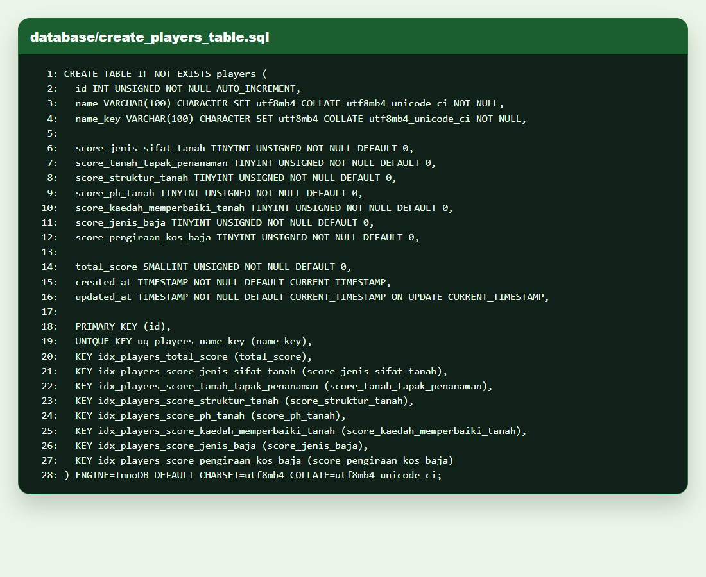
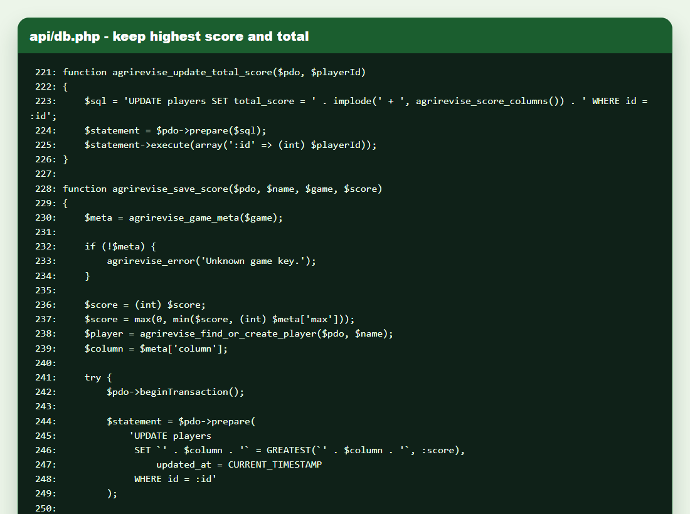
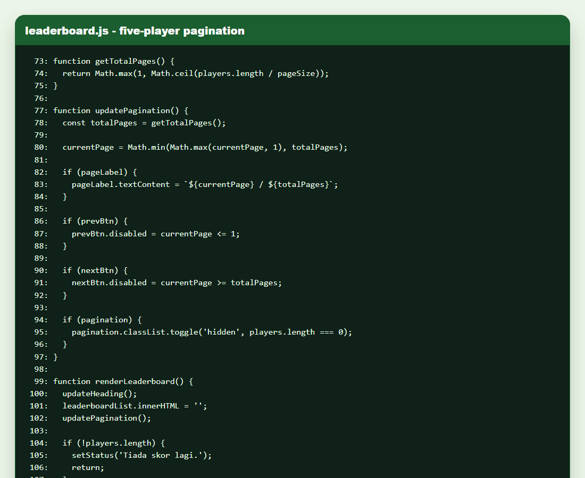
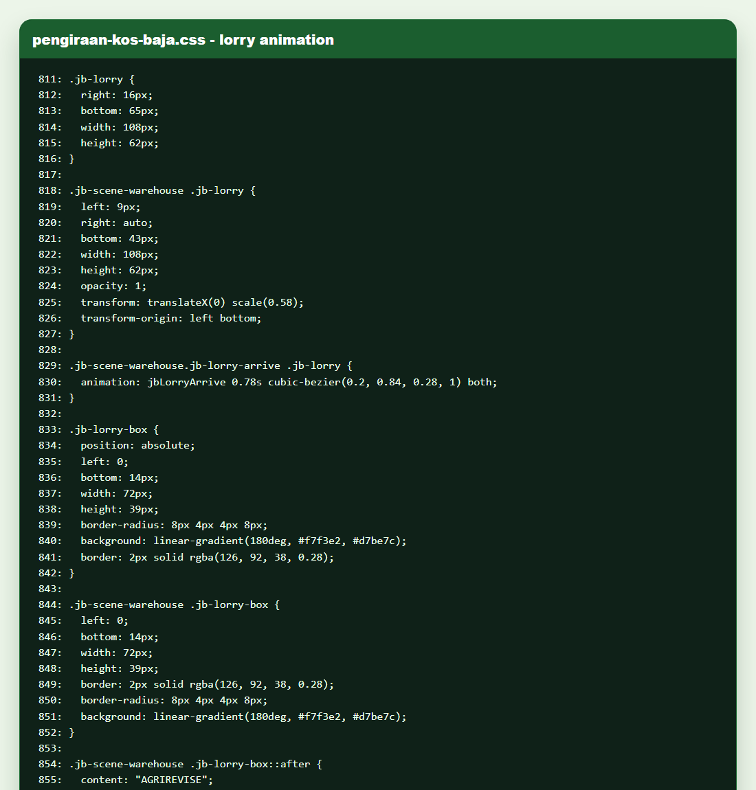
7. Website Design Screenshots
Screenshots were captured from the current local project using a 390 x 844 mobile viewport. The leaderboard image uses mock data only for visual demonstration because local file preview cannot call the Hostinger PHP API.
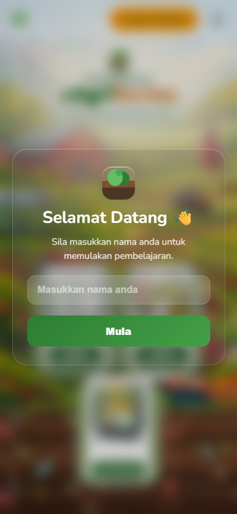
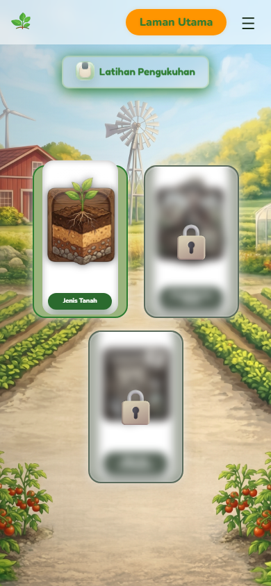
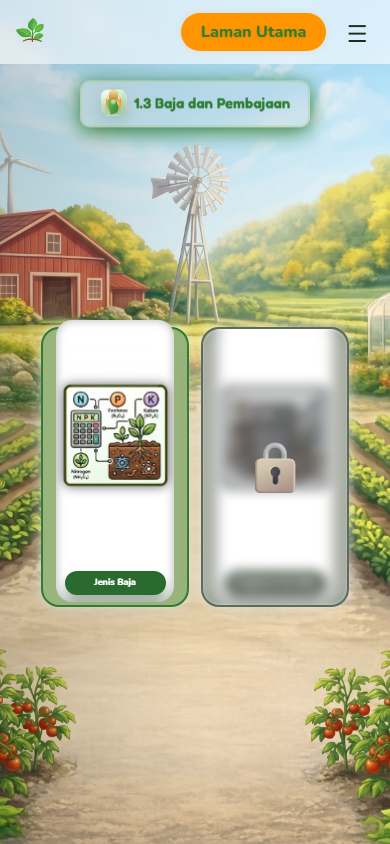
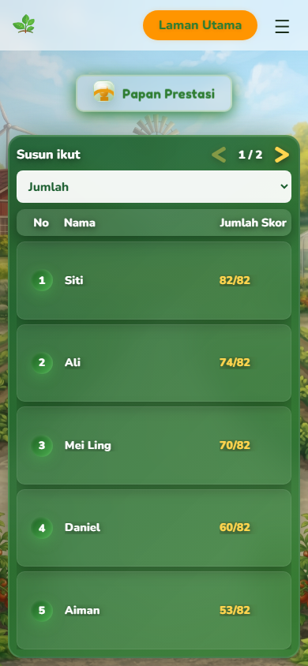
8. Game Page Screenshots
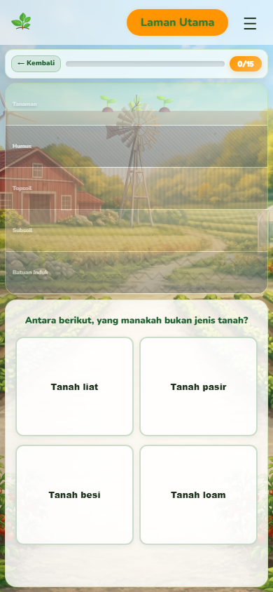
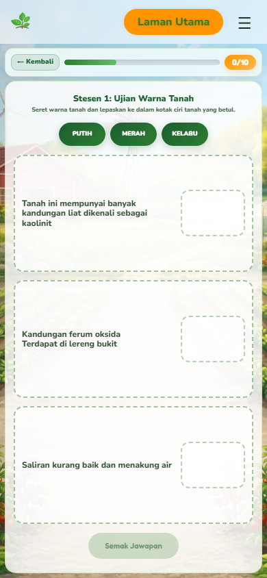
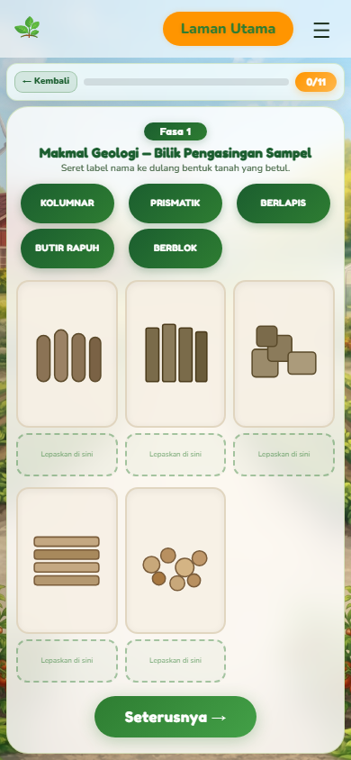
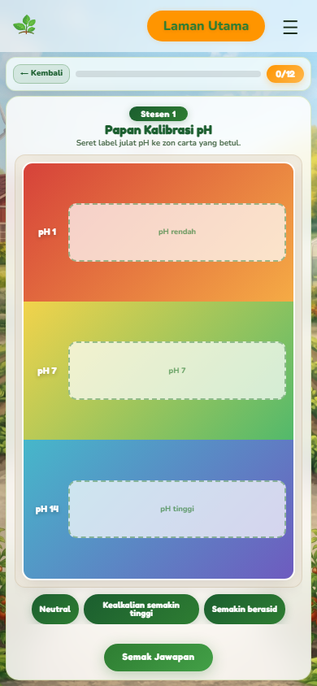
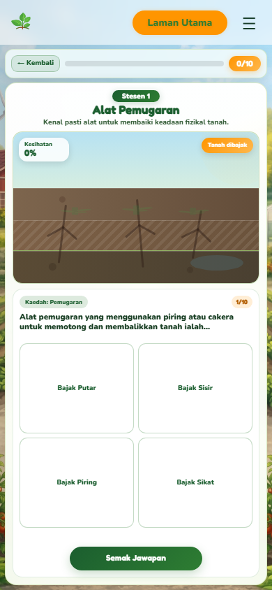
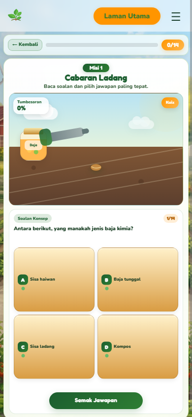
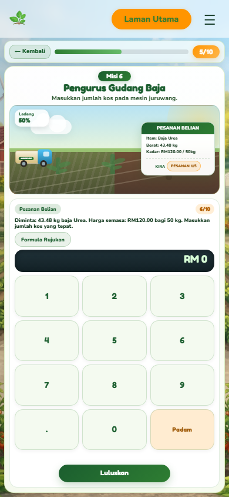
9. Testing and Verification
- Verified page layouts using Chrome mobile emulation at 390 x 844.
- Checked leaderboard display with five visible players per page.
- Confirmed high-score logic uses best score locally and in MySQL.
- Checked the calculator/keypad mission fits in a single phone viewport.
- Checked truck animation in Pengiraan Kos Baja: entry from left and delivery exit to right.
- Ran git diff --check on the documentation file; no whitespace errors were reported.
10. Remaining Notes
- Hostinger PHP/MySQL deployment should be tested through the live domain after uploading the latest files.
- The local screenshot for Papan Prestasi uses mock leaderboard rows for presentation because local file preview cannot execute the hosted PHP API.
- Future improvement: add a small admin/export page for downloading leaderboard records as CSV.